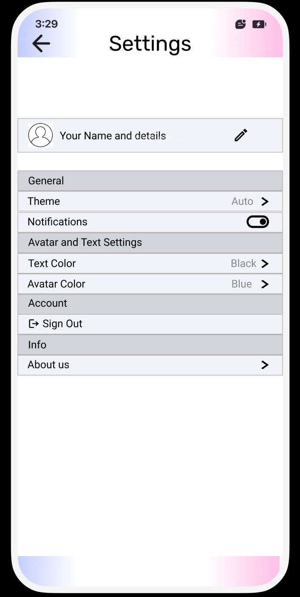

At a glance
- What it is: structured text chat + prompts
- Who it’s for: teens (13+) experiencing grief
- What it’s not: therapy, medical advice, or a person
Caregiver comfort check
Many caregivers prefer trying it first and setting boundaries.
- Try together once
- Set time limits
- Encourage real support (trusted adult/counselor)
What the chat looks like
- Check-in: “How heavy is today (0–10)?”
- Choose: Reflect • Remember • Practical next step
- Prompts: short answers are OK; skipping is OK
- Wrap-up: summarize + suggest reaching out if needed
See example prompts (optional)
• “What do you wish people understood?”
• “What’s one memory you don’t want to lose?”
• “What would help in the next hour?”
Setup (conceptual)
- Mode: Teen (13+) language + boundaries
- Controls: time limits + “take a break” reminders
- Privacy: minimize saved content (conceptual)
- Safety: encourages outside support if things feel unsafe
Why we removed voice (survey-driven)
Customization & Settings
The settings view shows how users can personalize the app experience while keeping the interface simple and readable.

Theme preferences
Users can adjust the visual experience, such as theme settings, to make the app feel more comfortable and familiar.
Notification control
Notifications can be turned on or off depending on whether the user wants reminders or a quieter experience.
Avatar and text settings
The interface can be personalized through avatar appearance and text display choices, helping the app feel more approachable.
Simple navigation
The settings screen is designed to be easy to scan and manage, especially for teens and caregivers using the app in emotional moments.
Safety + limitations
- Not professional care: clearly stated
- No replacement: encourages human support
- Crisis: directs users to trusted adults/emergency services